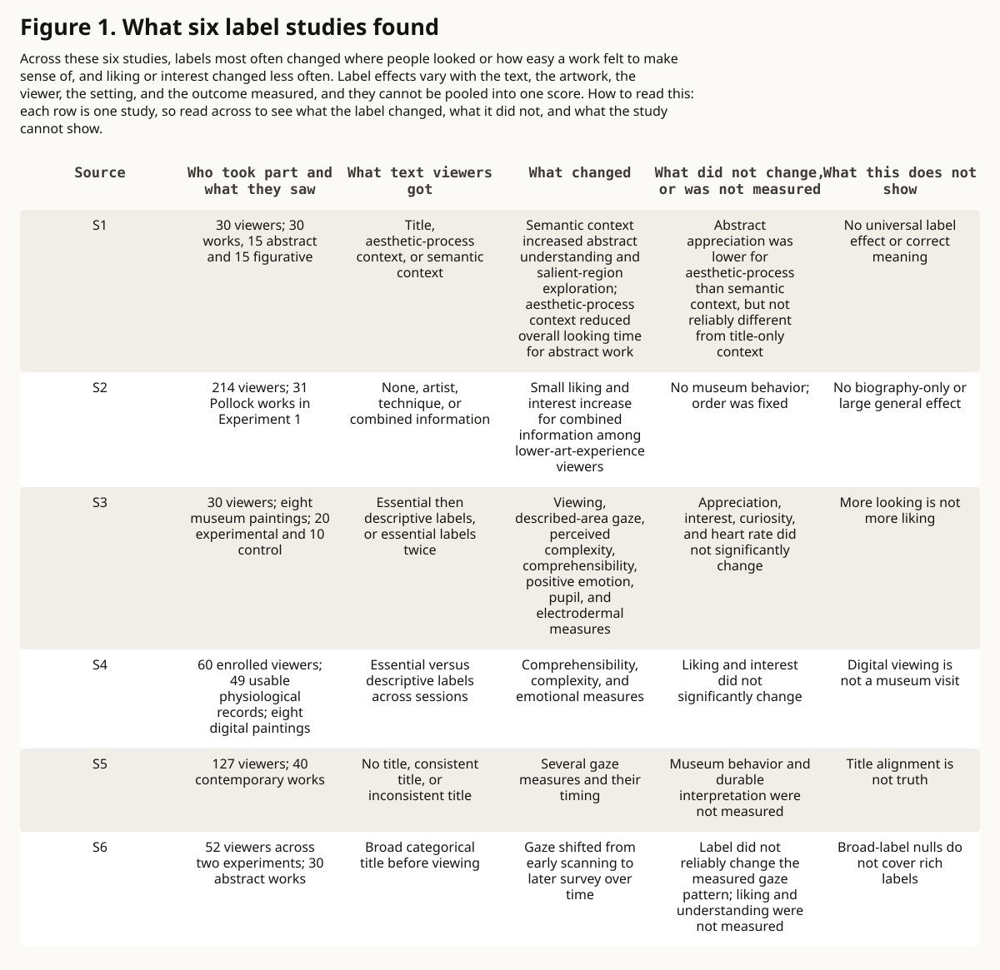

evidence-led visual essay · art-perception
What the Label Changes
A label can change where a viewer looks and how legible an artwork feels, but those changes remain separate from liking, learning, interpretive correctness, and artistic value.
Question. When does a label help someone see abstract art, and when does it only tell them what to say?
Finding. Descriptive or semantic context can redirect later looking and reduce perceived complexity, while appreciation and interest may stay unchanged.
Evidence. Seven peer-reviewed studies from laboratory, digital, and museum settings separate gaze, time, comprehensibility, arousal, interest, and liking.
Limit. The studies use different viewers, artworks, settings, texts, and measures, so their outcomes cannot be pooled into one score for label quality.
Before the label
A museum label usually arrives as a small sequence: artist, title, date, material, then a paragraph. It can feel secondary to the artwork, but it changes the conditions of looking. A named shape becomes easier to find. A technique becomes visible as a trace of action. A proposed meaning can become difficult to unsee.
That influence is neither automatically helpful nor automatically coercive. The useful question is narrower: which part of the experience changed? A viewer may look longer without liking more, report greater comprehensibility without learning anything durable, or follow a description without accepting it as the only meaning.
One word, several outcomes
Studies of art labels often measure several constructs at once. Looking behavior can include fixation count, fixation duration, saccade measures, spatial distribution, or total viewing time. Perceived legibility can include complexity, comprehensibility, or title informativeness. Arousal can appear in pupil or electrodermal measures. Appreciation can mean liking, interest, beauty, or curiosity.
Those measures are related, but they are not interchangeable. Pupil dilation is not a direct measure of pleasure. More time is not necessarily more interest. A higher comprehension rating is not a test of retained knowledge. Agreement with a label is not proof that its interpretation is correct. The evidence becomes clearer when each outcome keeps its own name.
A label can redirect attention
In a 2024 laboratory study, 30 participants viewed 30 paintings, split evenly between abstract and figurative work. Each work was preceded by a title and either no added context, information about aesthetic process, or information about semantic meaning. For abstract work, semantic context increased reported understanding and was associated with more frequent and longer fixations on salient regions.
A 2023 museum experiment found a related pattern under different conditions. Thirty art-naive volunteers viewed eight modern paintings during two visits. Descriptive labels increased viewing time and directed gaze toward described elements compared with essential labels, after accounting for a control group that received essential labels twice.
Titles can also change the timing of looking. In a 2022 experiment with 127 viewers and 40 contemporary paintings, semantic violations in the image affected eye movements early, while effects associated with consistent or inconsistent titles generally appeared later. Text did not replace the first visual encounter. It entered an unfolding one.
Legibility is not appreciation
The museum study offers the cleanest separation. Descriptive labels reduced perceived complexity and increased comprehensibility, title informativeness, and positive emotion. Pupil and electrodermal measures also changed. Yet appreciation, interest, and curiosity about other work by the same artists did not change significantly.
A 2024 digital follow-up with eight abstract paintings produced a similar boundary. Descriptive labels improved reported comprehensibility, reduced perceived complexity, and changed emotional measures, while liking and interest did not significantly change. Technical exclusions left 49 usable physiological records from 60 enrolled volunteers, which is why those denominators must remain separate.
A label can therefore make a work feel less opaque without making it more preferred. That is not a failed intervention. It is a reminder to state the intended outcome before celebrating a change.
Context can also backfire
The 2024 study did not find one uniformly positive effect. For abstract work, appreciation under aesthetic-process context was lower than under semantic context but not reliably different from title-only context. Overall looking time under aesthetic-process context was lower than under both other conditions, while semantic information increased understanding. The type of context mattered as much as its presence.
A preregistered 2023 online experiment points in another direction. Among 214 participants rating 31 Pollock paintings, combined artist and technique information produced small increases in liking and interest for viewers with lower art experience. The no-information condition always came first, so information and order were partly confounded.
The apparent disagreement is useful. The studies used different paintings, viewers, text, sequences, and outcomes. Together they do not produce a universal recipe. They show why a label needs a bounded purpose and why a positive average in one setting should not be carried into another without its conditions.
The early image can resist the label
Not every label moves the eyes. A 2025 study asked 52 participants across two experiments to view 30 abstract paintings preceded by broad categories such as landscape, portrait, still life, action, or abstract. The labels did not reliably alter fixation and saccade measures.
Viewing still changed over time. Early looking involved larger, faster scanning, followed by shorter movements and longer fixations. The researchers describe this as a shift from gist toward survey. Broad categories did not override that pattern.
The null result has a narrow scope. The study did not test rich descriptive or semantic text, and it did not ask for liking or understanding ratings. It shows that a label is not powerful merely because it appears first. It does not show that all context is inert.
The institution and the visitor
A 2026 field study at the Austrian Gallery Belvedere places the question inside an ordinary museum visit. Mobile eye tracking, surveys, and interviews showed substantial differences in label-reading activity. Dropout increased with text length, while references to image details and technique drew more engagement than artwork comparisons or biography.
The finding complicates both easy positions. A label has institutional power because it selects a route into the work. A visitor retains agency because reading, skipping, returning, and resisting vary from person to person. The label frames attention without fully determining it.
The study enrolled 212 visitors across two conditions and used a selected mobile-eye-tracking subset of 80, 40 per condition, for the paper's focal analysis. Its naturalistic, bundled between-condition design is not directly comparable to the six controlled rows, so it remains in prose rather than the numerical matrix.
Write for looking, not obedience
The evidence supports a modest editorial proposal. A useful label can name a concrete operation: follow the repeated edge, compare two densities, notice where the material changes, or return to a shape after reading the title. It can separate visible description from historical interpretation and mark uncertainty where the record is contested.
This is a synthesis, not an experimentally validated standard. Some visitors need context, some already possess it, and some prefer to meet the work before reading. Layered text, clear headings, and a short path into the image can preserve those choices better than one compulsory block.
A label is a lens, not a verdict. Its success should be judged by the specific help it promises, with the outcome and limitation kept visible. It may redirect looking or make a work more legible. It cannot, by itself, establish learning, agreement, correct interpretation, or artistic value.
Figure 1. The label is a lens, not a verdict
Label effects vary by text, artwork, viewer, setting, and measured outcome, and cannot be pooled into one score.

| Source | Viewer and artwork denominator | Text intervention | What changed | What did not change or was not measured | Non-proof |
|---|---|---|---|---|---|
| S1 | 30 viewers; 30 works, 15 abstract and 15 figurative | Title, aesthetic-process context, or semantic context | Semantic context increased abstract understanding and salient-region exploration; aesthetic-process context reduced overall looking time for abstract work | Abstract appreciation was lower for aesthetic-process than semantic context, but not reliably different from title-only context | No universal label effect or correct meaning |
| S2 | 214 viewers; 31 Pollock works in Experiment 1 | None, artist, technique, or combined information | Small liking and interest increase for combined information among lower-art-experience viewers | No museum behavior; order was fixed | No biography-only or large general effect |
| S3 | 30 viewers; eight museum paintings; 20 experimental and 10 control | Essential then descriptive labels, or essential labels twice | Viewing, described-area gaze, perceived complexity, comprehensibility, positive emotion, pupil, and electrodermal measures | Appreciation, interest, curiosity, and heart rate did not significantly change | More looking is not more liking |
| S4 | 60 enrolled viewers; 49 usable physiological records; eight digital paintings | Essential versus descriptive labels across sessions | Comprehensibility, complexity, and emotional measures | Liking and interest did not significantly change | Digital viewing is not a museum visit |
| S5 | 127 viewers; 40 contemporary works | No title, consistent title, or inconsistent title | Several gaze measures and their timing | Museum behavior and durable interpretation were not measured | Title alignment is not truth |
| S6 | 52 viewers across two experiments; 30 abstract works | Broad categorical title before viewing | Gaze shifted from early scanning to later survey over time | Label did not reliably change the measured gaze pattern; liking and understanding were not measured | Broad-label nulls do not cover rich labels |
- Scope
- Six peer-reviewed experiments published from 2022 through 2025 that vary label or title context and measure visual-art responses
- Units
- Study-specific viewer and artwork counts with direction-of-result descriptions; no pooled effect size
- Denominator
- One row per study setting; viewers, artworks, conditions, and physiological exclusions remain study-specific
- Date
- Sources published 2022-03-04 through 2025-06-12 and observed 2026-09-02
- Transformation
- Outcomes are paraphrased as changed, no reliable change, or not measured; no meta-analysis, normalization, or cross-study ranking
- Uncertainty
- Settings, viewers, works, text interventions, exposure sequences, and measures differ substantially
- Limitations
- The 2026 field study is discussed in prose but excluded from the matrix because its naturalistic, bundled between-condition intervention and selected 80-participant subset are not directly comparable to the six controlled rows.
- Does not prove
- The matrix does not establish label quality, one correct interpretation, durable learning, visitor agreement, or artistic value.
Sources
- How does contextual information affect aesthetic appreciation and gaze behavior in figurative and abstract artwork?. Journal of Vision. peer-reviewed controlled experiment comparing title, aesthetic-process, and semantic context. Published 2024-11-08; observed 2026-09-02.
- The impact of contextual information on aesthetic engagement of artworks. Scientific Reports. peer-reviewed preregistered experiments on artist, technique, and content information. Published 2023-03-15; observed 2026-09-02.
- Psychophysiological and behavioral responses to descriptive labels in modern art museums. PLOS ONE. peer-reviewed museum experiment combining behavioral, questionnaire, gaze, and physiological measures. Published 2023-05-03; observed 2026-09-02.
- Effectiveness of labels in digital art experience: psychophysiological and behavioral evidence. Frontiers in Psychology. peer-reviewed digital follow-up on essential and descriptive labels for abstract paintings. Published 2024-07-01; observed 2026-09-02.
- Titles and Semantic Violations Affect Eye Movements When Viewing Contemporary Paintings. Frontiers in Human Neuroscience. peer-reviewed eye-tracking experiment on title presence, consistency, and image-level semantic violations. Published 2022-03-04; observed 2026-09-02.
- Viewing of abstract art follows a gist to survey gaze pattern over time regardless of broad categorical titles. PLOS ONE. peer-reviewed abstract-art eye-tracking study and null boundary for broad categorical labels. Published 2025-06-12; observed 2026-09-02.
- We See as We Are Told? How Exhibit Labels Shape Art Perception in the Museum. Visitor Studies. current peer-reviewed museum field study of label length, content, reading, viewing, and visitor agency. Published 2026-07-29; observed 2026-09-02.
Claim ledger
| Claim | Text | Status | Sources | Scope | Uncertainty | Does not prove |
|---|---|---|---|---|---|---|
| C1 | Semantic context increased reported understanding and salient-region exploration for abstract work in one controlled study, while aesthetic-process context produced lower abstract-art appreciation than semantic context and less overall looking time than both semantic and title-only context. | verified | S1 | Thirty young adult viewers and thirty digital reproductions split between abstract and figurative work | Laboratory setting, narrow age range, and participants without art-history qualifications | A universal benefit or harm from contextual information |
| C2 | Combined artist and technique information produced small increases in Pollock liking and interest among lower-art-experience viewers in one preregistered online experiment. | verified | S2 | Two hundred fourteen North American online participants and thirty-one Pollock paintings in Experiment 1 | The no-information block always came first, partly confounding context and order | That biography alone improves perception or that the effect is large |
| C3 | Descriptive labels in one museum experiment increased viewing, guided gaze, reduced perceived complexity, and changed arousal measures without significantly changing appreciation or interest. | verified | S3 | Thirty art-naive university volunteers, eight modern paintings, and two visits at least one month apart | Small young sample and descriptive labels presented on the second exposure | That more looking means more liking or that arousal is pleasure |
| C4 | A digital follow-up found changes in comprehensibility, perceived complexity, and emotional measures while liking and interest did not significantly change. | verified | S4 | Sixty enrolled volunteers, forty-nine usable physiological records, and eight digital abstract paintings | Digital reproductions, repeated sessions, and a smaller physiological denominator | Durable learning or equivalence with free museum behavior |
| C5 | Titles and image-level semantic violations affected eye-movement measures on different time courses in one contemporary-art experiment. | verified | S5 | One hundred twenty-seven viewers without formal art education and forty digital reproductions | Fabricated title conditions and fixed-duration laboratory viewing | That title-consistent looking is correct interpretation |
| C6 | Broad category labels did not reliably change measured gaze dynamics in two abstract-art experiments, while viewing shifted from early scanning toward later survey over time. | verified | S6 | Fifty-two participants across two experiments and thirty in-house abstract paintings | The labels were broad categories, and liking and understanding were not measured | That richer descriptive or semantic labels cannot affect looking or interpretation |
| C7 | A current museum field study reports substantial variation in label reading, more dropout with longer text, and greater engagement with image detail and technique than with comparisons or biography. | verified | S7 | Two hundred twelve museum visitors enrolled across two conditions; the paper used a selected mobile-eye-tracking subset of eighty, forty per condition | Naturalistic field setting, bundled label changes, and a selected 80-participant subset; excluded from the numerical matrix to preserve cross-study comparability | One ideal label length or content pattern for every visitor |
| C8 | A label is best treated as a lens that can alter selected perceptual or reported outcomes, not as a verdict on meaning or value. | inferred | S1, S2, S3, S4, S5, S6, S7 | An editorial synthesis across controlled, digital, and museum studies with distinct text interventions and outcomes | The studies are heterogeneous and do not validate one label-writing standard | Label quality, durable learning, correct interpretation, agreement, or artistic value |
Corrections
No corrections recorded.